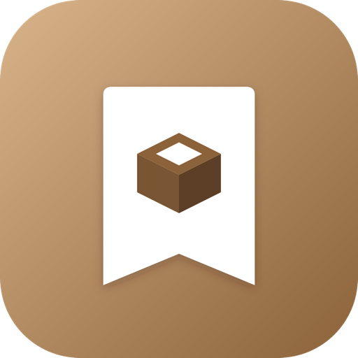

Inventario scatole
Scatole, oggetti e luoghi organizzati — niente più tre scatoloni aperti in garage per trovare un cacciavite.
BX-7F3K9Ogni scatola ha un codice univoco leggibile, uno stato (aperta o sigillata) e un luogo — con lo storico di dove è stata prima. Dentro, gli oggetti: nome, descrizione, una foto. Quando serve, stampi un'etichetta con QR e codice a barre e la attacchi alla scatola vera.
Codice univoco tipo BX-XXXXX, stato aperta/sigillata, luogo attuale e storico spostamenti.
QR code + codice a barre + codice leggibile, pronte da stampare e attaccare sulla scatola.
Garage, cantina, soffitta: ogni luogo ha un nome, una posizione opzionale e le sue foto.
Ritrova un oggetto anche solo dalla foto — l'analisi avviene sul telefono, non nel cloud.
Inquadra l'etichetta di una scatola per aprirla subito, senza cercare nell'app.
Lo stesso inventario visibile a tutta la famiglia — funzione Premium.
Nessun limite artificiale — la versione gratuita organizza scatole, oggetti e luoghi senza tetti massimi. Premium aggiunge la condivisione in famiglia, non toglie nulla a chi non paga.